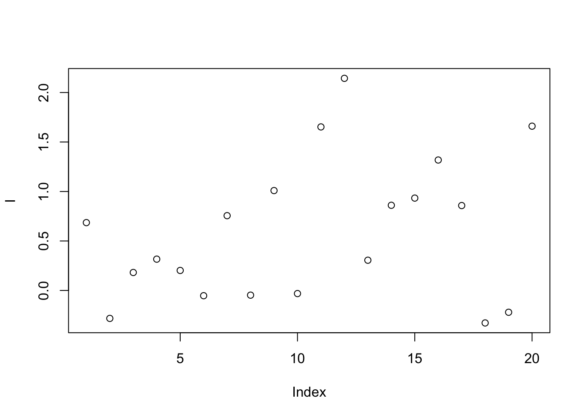
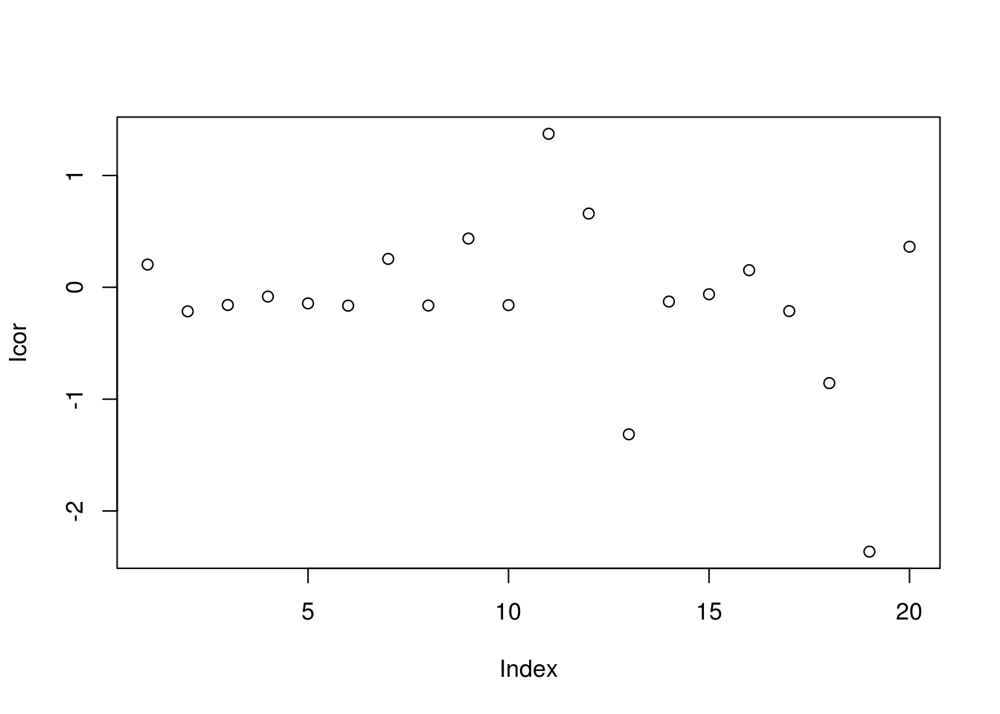
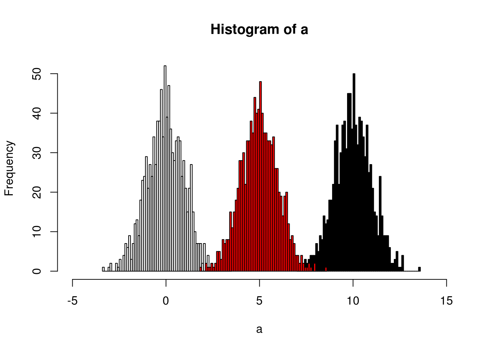

Chapter 4 Raw data pretreatment
Raw data from the instruments such as LC-MS or GC-MS were hard to be analyzed. To make it clear, the structure of those data could be summarised as:
- to get full infomation in the samples, full scan is perferred
- full scan is performed synchronously with the seperation process
GC/LC-MS data are usually be shown as a matrix with column standing for retention times and row standing for masses. Noises are so much that such data could not be processed effeciently.
Figure 4.1: Demo of GC/LC-MS data
Conversation from the mass-retention time matrix into a vector with selected MS peaks at certain retention time is the basic idea of the Raw data pretreatment. The Centwave algorithm(Tautenhahn, Böttcher, and Neumann 2008) based on detection of regions of interest(ROI) and the following Continuous Wavelet Transform (CWT) for the peaks is preferred for high-resolution mass spectrum.
With many groups of samples, you will get another data matrix with column standing for ions at cerntain retention time and row standing for samples after the Raw data pretreatment.
Figure 4.2: Demo of many GC/LC-MS data
4.1 Spectral deconvolution
Without fracmental infomation about certain compound, the peak extraction would suffer influnces from other compounds. At the same retention time, co-elute compounds might share similar mass. Hard electron ionization methods such as electron impact ionization (EI), APPI suffer this issue. So it would be hard to distighuish the co-elute peaks’ origin and deconvolution method(Du and Zeisel 2013) could be used to seperate different groups according to the similar chromatogragh beheviors. Another computational tool eRah could be a better solution for the whole process(Domingo-Almenara et al. 2016). Also the ADAD-GC3.0 could also be helpful for such issue(Ni et al. 2016).
4.2 Correction
However, before you get the peaks, some corrections should be performed such as mass shift and retention time shift. The basic idea behind retention time correction is that use the high quality grouped peaks to make a new retention time. You might choose obiwarp or loess regression method to get the corrected retention time for all of the samples. Remember the original retention times might be changed and you might need cross-correct the data.
4.3 Dynamic Range
Another issue is the Dynamic Range. For metabolomics, peaks could be below the detection limit or over the detection limit. Such Dynamic range issues might raise the loss of information.
4.3.1 Non-detects
Some of the data were limited by the detect of limitation. Thus we need some methods to impute the data if we don’t want to lose information by deleting the NA or 0.
Tobit regression is preferred. Also you might choose maximum likelihood estimation(Estimation of mean and standard deviation by MLE. Creating 10 complete samples. Pool the results from 10 individual analyses).
x <- rnorm(1000,1)
x[x<0] <- 0
y <- x*10+1
library(AER)## Loading required package: car## Loading required package: lmtest## Loading required package: zoo##
## Attaching package: 'zoo'## The following objects are masked from 'package:base':
##
## as.Date, as.Date.numeric## Loading required package: sandwich## Loading required package: survivaltfit <- tobit(y ~ x, left = 0)
summary(tfit)##
## Call:
## tobit(formula = y ~ x, left = 0)
##
## Observations:
## Total Left-censored Uncensored Right-censored
## 1000 0 1000 0
##
## Coefficients:
## Estimate Std. Error z value Pr(>|z|)
## (Intercept) 1.0000 0.4523 2.211 0.027 *
## x 10.0000 0.3162 31.623 <2e-16 ***
## Log(scale) 2.1612 0.0000 Inf <2e-16 ***
## ---
## Signif. codes: 0 '***' 0.001 '**' 0.01 '*' 0.05 '.' 0.1 ' ' 1
##
## Scale: 8.681
##
## Gaussian distribution
## Number of Newton-Raphson Iterations: 1
## Log-likelihood: -3080 on 3 Df
## Wald-statistic: 1000 on 1 Df, p-value: < 2.22e-164.3.2 Over detection limit
CorrectOverloadedPeaks could be used to correct the Peaks Exceeding the Detection Limit issue(Lisec et al. 2016).
4.4 Adjust for unwanted variances with known batch
4.4.1 Centering
For peak p of sample s in batch b, the corrected abundance I is:
\[\hat I_{p,s,b} = I_{p,s,b} - mean(I_{p,b}) + median(I_{p,qc})\]
For example, we have the intensities of one peak from ten samples in two batches like the following demo:
set.seed(42)
# raw data
I = c(rnorm(10,mean = 0, sd = 0.5),rnorm(10,mean = 1, sd = 0.5))
# batch
B = c(rep(0,10),rep(1,10))
# qc
Iqc = c(rnorm(1,mean = 0, sd = 0.5),rnorm(1,mean = 1, sd = 0.5))
# corrected data
Icor = I - c(rep(mean(I[1:10]),10),rep(mean(I[11:20]),10)) + median(Iqc)
# plot the result
plot(I)
plot(Icor)
4.4.2 Scaling
For peak p of sample s in certain batch b, the corrected abundance I is:
\[\hat I_{p,s,b} = \frac{I_{p,s,b} - mean(I_{p,b})}{std_{p,b}} * std_{p,qc,b} + mean(I_{p,qc,b})\]
For example, we have the intensities of one peak from ten samples in two batches like the following demo:
set.seed(42)
# raw data
I = c(rnorm(10,mean = 0, sd = 0.3),rnorm(10,mean = 1, sd = 0.5))
# batch
B = c(rep(0,10),rep(1,10))
# qc
Iqc = c(rnorm(1,mean = 0, sd = 0.3),rnorm(1,mean = 1, sd = 0.5))
# corrected data
Icor = (I - c(rep(mean(I[1:10]),10),rep(mean(I[11:20]),10)))/c(sd(I[1:10]),sd(I[11:20]))*c(rep(0.3,10),rep(0.5,10)) + Iqc[1]
# plot the result
plot(I)
plot(Icor)
4.4.3 Quantile
The idea of quantile calibration is that alignment of the intensities in certain samples according to quantiles in each sample.
Here is the demo:
set.seed(42)
a <- rnorm(1000)
# b sufferred batch effect with a bias of 10
b <- rnorm(1000,10)
hist(a,xlim=c(-5,15),breaks = 50)
hist(b,col = 'black', breaks = 50, add=T)
# quantile normalized
cor <- (a[order(a)]+b[order(b)])/2
# reorder
cor <- cor[order(order(a))]
hist(cor,col = 'red', breaks = 50, add=T)
4.4.4 Ratio based calibraton
This method calibrates samples by the ratio between qc samples in all samples and in certain batch.For peak p of sample s in certain batch b, the corrected abundance I is:
\[\hat I_{p,s,b} = \frac{I_{p,s,b} * median(I_{p,qc})}{mean_{p,qc,b}}\]
set.seed(42)
# raw data
I = c(rnorm(10,mean = 0, sd = 0.3),rnorm(10,mean = 1, sd = 0.5))
# batch
B = c(rep(0,10),rep(1,10))
# qc
Iqc = c(rnorm(1,mean = 0, sd = 0.3),rnorm(1,mean = 1, sd = 0.5))
# corrected data
Icor = I * median(c(rep(Iqc[1],10),rep(Iqc[2],10)))/mean(c(rep(Iqc[1],10),rep(Iqc[2],10)))
# plot the result
plot(I)
plot(Icor)
4.4.5 Linear Normalizer
This method initially scales each sample so that the sum of all peak abundances equals one. In this study, by multiplying the median sum of all peak abundances across all samples,we got the corrected data.
set.seed(42)
# raw data
peaksa <- c(rnorm(10,mean = 10, sd = 0.3),rnorm(10,mean = 20, sd = 0.5))
peaksb <- c(rnorm(10,mean = 10, sd = 0.3),rnorm(10,mean = 20, sd = 0.5))
df <- rbind(peaksa,peaksb)
dfcor <- df/apply(df,2,sum)* sum(apply(df,2,median))
image(df)
image(dfcor)
4.4.6 Regression calibration
Considering the batch effect of injection order, regress the data by a linear model to get the calibration.
4.4.7 Batch Normalizer
Use the total abundance scale and then fit with the regression line(Wang, Kuo, and Tseng 2013).
4.4.8 Internal standards
\[\hat I_{p,s} = \frac{I_{p,s} * median(I_{IS})}{I_{IS,s}}\]
Some methods also use pooled calibration samples and multiple internal standard strategy to correct the data(???). Also some methods only use QC samples to handle the data(Kuligowski et al. 2015).
4.5 Adjust for unwanted variance with unknown batch
4.5.1 SVA
4.5.2 RUV
References
Tautenhahn, Ralf, Christoph Böttcher, and Steffen Neumann. 2008. “Highly Sensitive Feature Detection for High Resolution LC/MS.” BMC Bioinformatics 9: 504. doi:10.1186/1471-2105-9-504.
Du, Xiuxia, and Steven H Zeisel. 2013. “SPECTRAL DECONVOLUTION FOR GAS CHROMATOGRAPHY MASS SPECTROMETRY-BASED METABOLOMICS: CURRENT STATUS AND FUTURE PERSPECTIVES.” Computational and Structural Biotechnology Journal 4 (5): 1–10. doi:10.5936/csbj.201301013.
Domingo-Almenara, Xavier, Jesus Brezmes, Maria Vinaixa, Sara Samino, Noelia Ramirez, Marta Ramon-Krauel, Carles Lerin, et al. 2016. “ERah: A Computational Tool Integrating Spectral Deconvolution and Alignment with Quantification and Identification of Metabolites in GC/MS-Based Metabolomics.” Analytical Chemistry 88 (19): 9821–9. doi:10.1021/acs.analchem.6b02927.
Ni, Yan, Mingming Su, Yunping Qiu, Wei Jia, and Xiuxia Du. 2016. “ADAP-GC 3.0: Improved Peak Detection and Deconvolution of Co-Eluting Metabolites from GC/TOF-MS Data for Metabolomics Studies.” Analytical Chemistry 88 (17): 8802–11. doi:10.1021/acs.analchem.6b02222.
Lisec, Jan, Friederike Hoffmann, Clemens Schmitt, and Carsten Jaeger. 2016. “Extending the Dynamic Range in Metabolomics Experiments by Automatic Correction of Peaks Exceeding the Detection Limit.” Analytical Chemistry 88 (15): 7487–92. doi:10.1021/acs.analchem.6b02515.
Wang, San-Yuan, Ching-Hua Kuo, and Yufeng J. Tseng. 2013. “Batch Normalizer: A Fast Total Abundance Regression Calibration Method to Simultaneously Adjust Batch and Injection Order Effects in Liquid Chromatography/Time-of-Flight Mass Spectrometry-Based Metabolomics Data and Comparison with Current Calibration Methods.” Analytical Chemistry 85 (2): 1037–46. doi:10.1021/ac302877x.
Kuligowski, Julia, Ángel Sánchez-Illana, Daniel Sanjuán-Herráez, Máximo Vento, and Guillermo Quintás. 2015. “Intra-Batch Effect Correction in Liquid Chromatography-Mass Spectrometry Using Quality Control Samples and Support Vector Regression (QC-SVRC).” Analyst 140 (22): 7810–7. doi:10.1039/C5AN01638J.